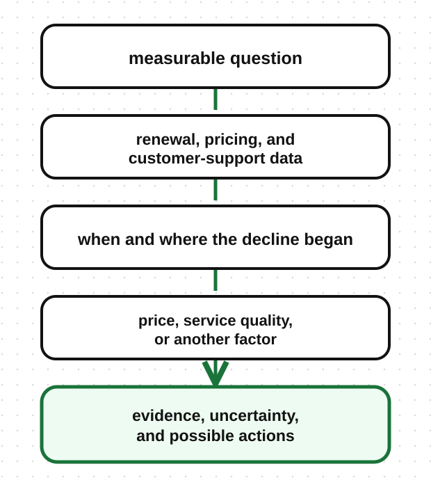

A mobile network sees that thousands of customers have stopped renewing their monthly bundles. The records show what happened, but the company needs to understand the pattern, test possible explanations, and decide what evidence would support a solution. This kind of open-ended problem is where data science becomes useful.
Data science combines statistics, programming, domain knowledge, and data analysis to extract insights and build data-driven solutions.
Data science may use statistical analysis, experiments, simulations, careful exploration, or machine learning.
Each part contributes something different:
Knowing the business matters as much as knowing the numbers. A pattern in mobile data means little if the person studying it does not understand bundles, pricing, customer behaviour, or how the records were created.
Data scientists often work on problems such as:
The work usually begins with a question, not a model. A data scientist decides what evidence is needed, checks whether suitable data exists, chooses an appropriate method, tests the result, and explains its limitations.
For the falling renewals, a data scientist might:

If the company later asks which individual customers are likely to leave next month, the problem has changed. It now needs a prediction. That is where machine learning may enter the project.